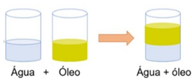

Uma grande parte dos materiais que fazem parte de nossa vida são constituídos por uma mistura de duas ou mais substâncias. O ar que respiramos é uma mistura constituída principalmente por dois gases: o gás oxigênio e o gás nitrogênio. O sangue é outro exemplo de mistura constituída por várias substâncias, como água, glicose, sais minerais, gás oxigênio, gás carbônico, entre outras. A água que encontramos na natureza também é considerada um exemplo de mistura, pois há várias substâncias dissolvidas nela. O mesmo ocorre com a água potável que sacia nossa sede: ela contém várias substâncias, por exemplo, os sais minerais. Os materiais que compõem os seres vivos, como a seiva das plantas, também são misturas. O petróleo é uma mistura de diversas substâncias.
TIPOS DE MISTURAS
Segundo Lopes e Audino (2018), de acordo com seu aspecto visual ou com o auxílio de um microscópico óptico, as misturas podem ser classificadas como misturas homogêneas ou misturas heterogêneas.
MISTURA HOMOGÊNEA
As misturas homogêneas são aquelas que apresentam uma única fase. Esse tipo de mistura pode apresentar nos estados líquido, sólido e gasoso.
Quando adicionamos uma pequena quantidade de açúcar (sacarose) ou sal de cozinha (cloreto de sódio) em um determinado volume de água, observamos, após agitação da mistura que tanto o açúcar quanto o sal foram dissolvidos pela água. Neste tipo de mistura, não podemos identificar o açúcar ou o sal que estão dissolvidos, esta mistura então é denominada, mistura homogênea.

MISTURA HETEROGÊNEA
A mistura heterogênea é aquela com aspecto não uniforme, em que podemos distinguir suas partes ou fases e cada parte ou fase possuem uma constituição diferente da outra.
No exemplo acima temos a mistura de água e óleo, temos a fase água e a fase óleo, com constituição diferente uma da outra.